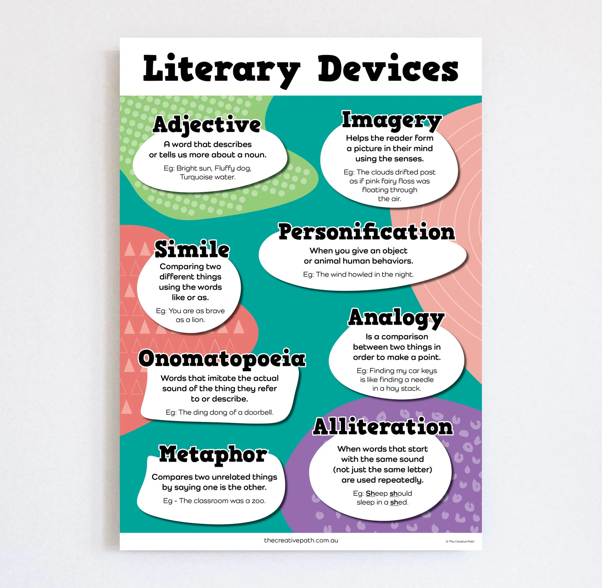
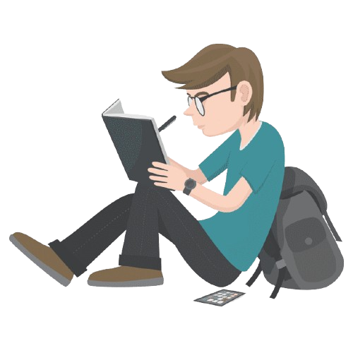

General
Literary devices aren't just "for show," they're necessary to enhance your writing. Studying literary devices taught me to the sheer importance to creating life in a story. Metaphors, Similes, Foreshadowing, Symbolism, Personification, and Imagery: each one layers depth beneath the surface. Those skills transferred everywhere: into how I read, write, and communicate. Once you understand how literary devices improve essays, you can't stop using it.

Literary Devices Glossary

How It Impacted Me
Starting out this year, Literary Devices were an unknown topic to me and I never used any of the them knowingly. After I learned about the Literary Devices, I enhanced my stories and my essays with metaphors and similes that hook my readers, and personification and symbolism to keep them intertwined with the story.
Device Title
Device explanation text strings render natively here.